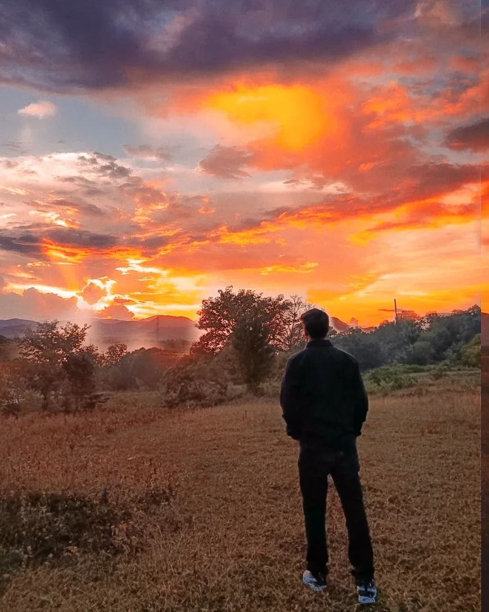
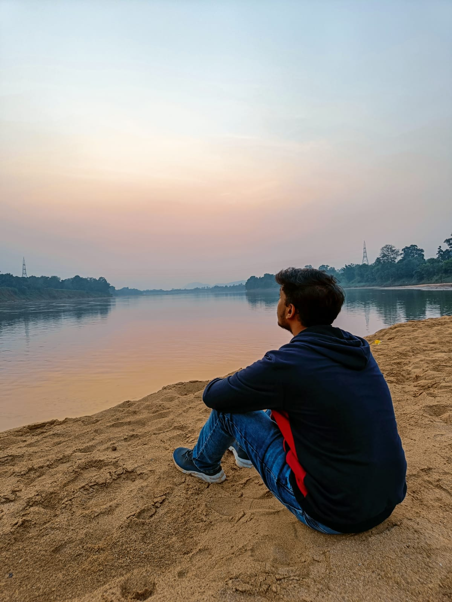
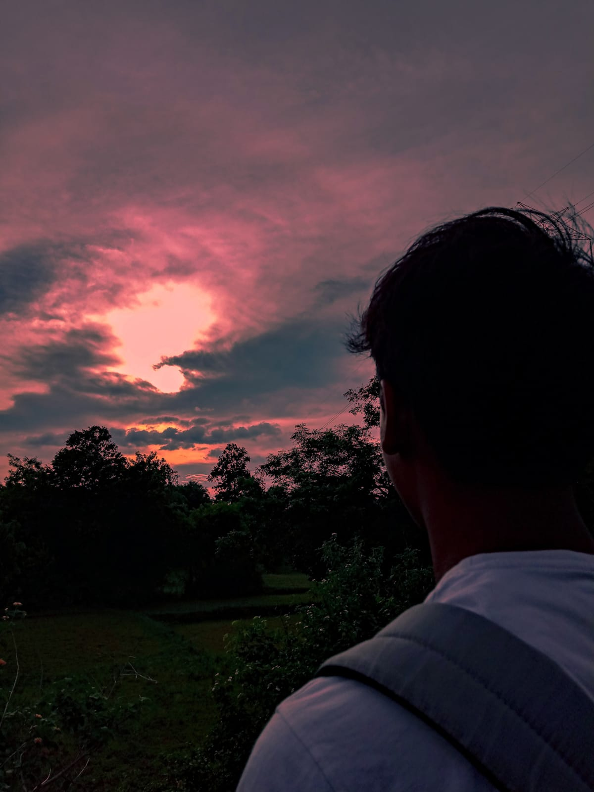
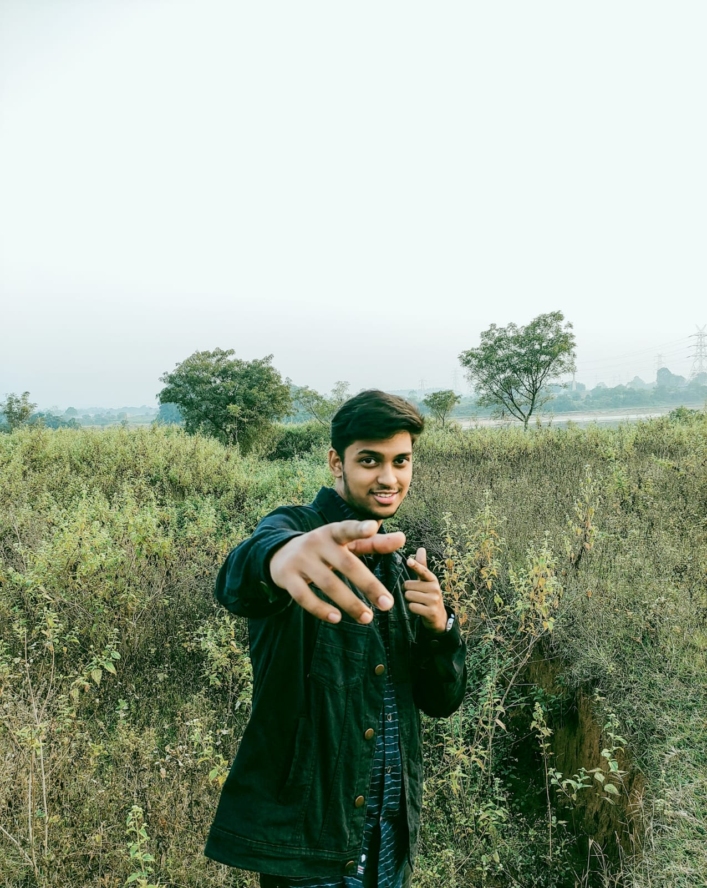
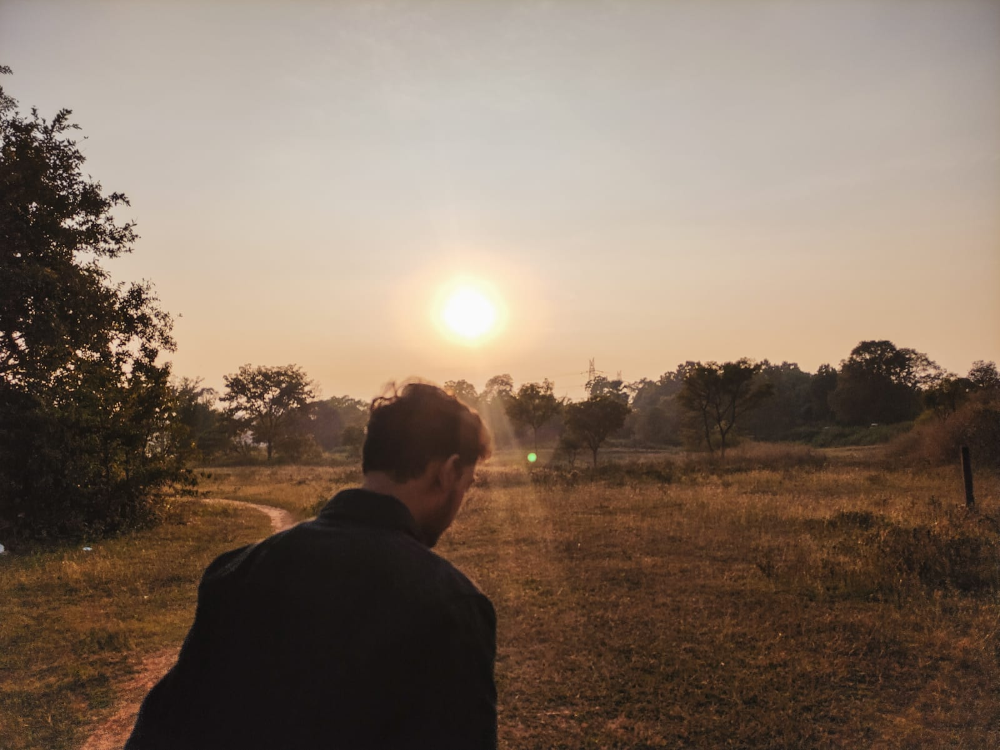
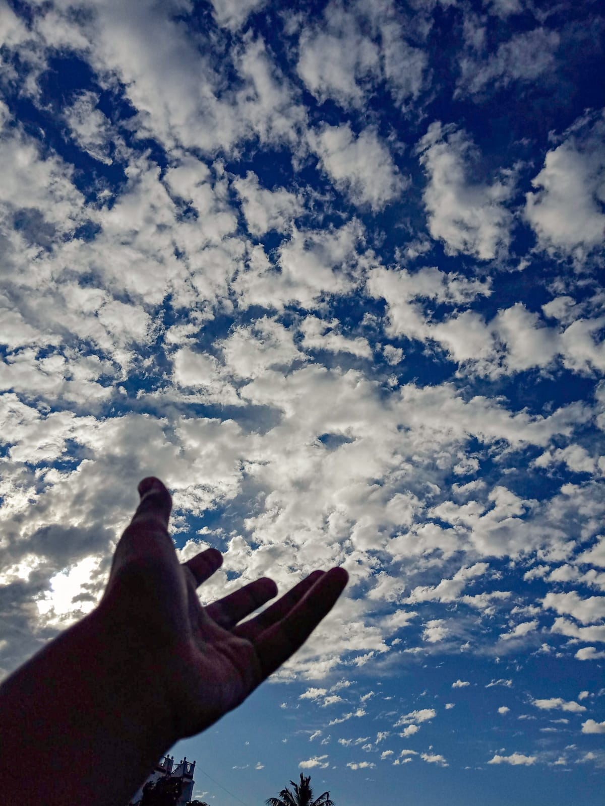

<!DOCTYPE html>
<html lang="en">
<head>
    <meta charset="UTF-8">
    <meta http-equiv="X-UA-Compatible" content="IE=edge">
    <meta name="viewport" content="width=device-width, initial-scale=1.0">
    <title>thepicturepatch</title>
    <link rel="stylesheet" href="app.css">
</head>
<body>
    
</body>
</html>
<nav>
    <div class="links1">
      <ul class="links">
       <li><a href="#">about</a></li>
       <li><a href="#">services</a></li>
      </ul>
        </div>
     <div class="logo">
       SSS
     </div>
      <div class="links2">
        <ul class="links">
       <li><a href="#">works</a></li>
       <li><a href="#">contact</a></li>
       </ul>
     </div>
   </nav>
 <header>
   <h1>The Picture Patch</h1>
   <p>The Picture Patch is a project of conceitual photos with a focus on beautiful and warm aesthetic of the simplicity of things.</p>
  
 </header>
 <main>
 <div class="gallery">
   <figure>
     
     <figcaption>Years ago, when I was backpacking across Western Europe</figcaption>
   </figure>
 
   <figure>
     
     <figcaption>High Hopes</figcaption>
   </figure>
 
   <figure>
     
     <figcaption>Burning low</figcaption>
   </figure>
 
   <figure>
     
     <figcaption>Hey! </figcaption>
   </figure>
   
     <figure>
     
     <figcaption>Symphony</figcaption>
   </figure>
   
    <figure>
     
     <figcaption>Unreachable</figcaption>
   </figure>
 
   <figure>
     
     <figcaption>Beauty of the sky</figcaption>
   </figure>
   
    <figure>
     
     <figcaption>Back to sky</figcaption>
   </figure>
   
   <figure>
     
     <figcaption>No place like Home</figcaption>
   </figure>
 </div>
 </main>
 
 <footer>
   <h3>The Picture Patch <p><a href=>Made by Shubh </a></p><span>(2022)</span></h3> 
 </footer>
 
 <!-- not the best code, but made with love and excitement to learn and make even more great stuff, thanks for passing by :-) -->